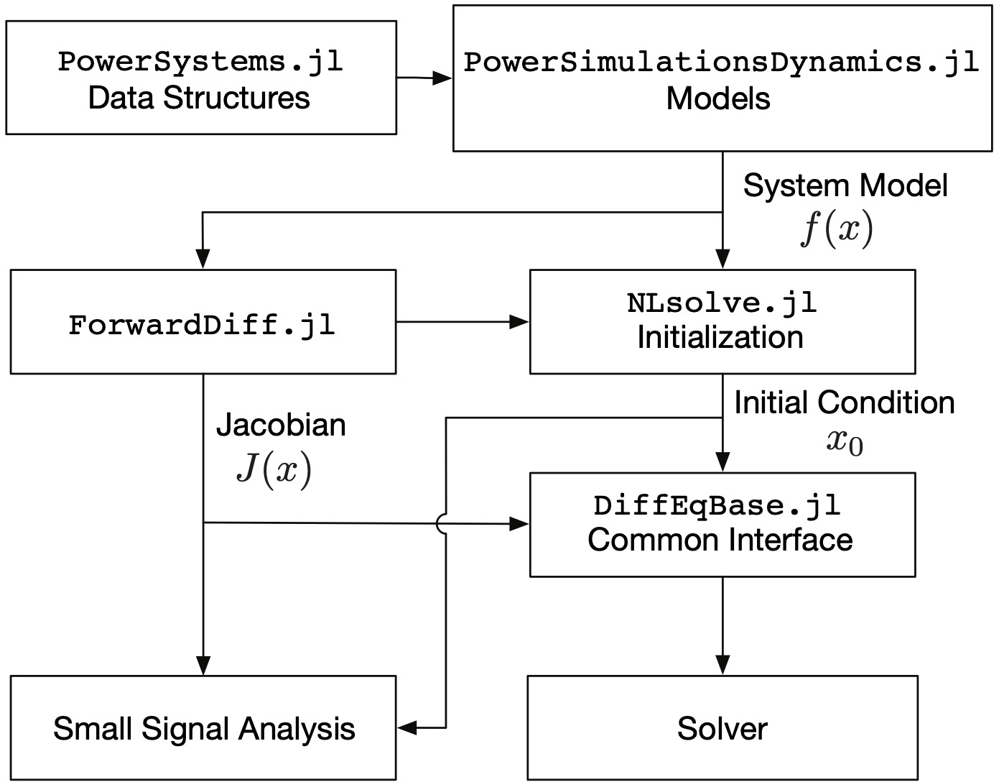

PowerSimulationsDynamics.jl
Overview
PowerSimulationsDynamics.jl is a Julia package for doing Power Systems Dynamic Modeling with Low Inertia Energy Sources.
The synchronous machine components supported here are based on commercial models and the academic components are derived from Power System Modelling and Scripting.
Inverter models support both commercial models, such as REPC, REEC and REGC type of models; and academic models obtained from grid-following and grid-forming literature such as in "A Virtual Synchronous Machine implementation for distributed control of power converters in SmartGrids"
The background work on PowerSimulationsDynamics.jl is explained in Revisiting Power Systems Time-domain Simulation Methods and Models
@article{lara2023revisiting,
title={Revisiting Power Systems Time-domain Simulation Methods and Models},
author={Lara, Jose Daniel and Henriquez-Auba, Rodrigo and Ramasubramanian, Deepak and Dhople, Sairaj and Callaway, Duncan S and Sanders, Seth},
journal={arXiv preprint arXiv:2301.10043},
year={2023}
}Structure
The following figure shows the interactions between PowerSimulationsDynamics.jl, PowerSystems.jl, ForwardDiff.jl, DiffEqBase.jl and the integrators. The architecture of PowerSimulationsDynamics.jl is such that the power system models are all self-contained and return the model function evaluations. The Jacobian is calculated using automatic differentiation through ForwardDiff.jl, that is used for both numerical integration and small signal analysis. Considering that the resulting models are differential-algebraic equations (DAE), the implementation focuses on the use of implicit solvers, in particular BDF and Rosenbrock methods.

About Sienna
PowerSimulationsDynamics.jl is part of the National Laboratory of the Rockies (formerly known as NREL)'s Sienna ecosystem, an open source framework for power system modeling, simulation, and optimization. The Sienna ecosystem can be found on Github. It contains three applications:
- Sienna\Data enables efficient data input, analysis, and transformation
- Sienna\Ops enables enables system scheduling simulations by formulating and solving optimization problems
- Sienna\Dyn enables system transient analysis including small signal stability and full system dynamic simulations
Each application uses multiple packages in the Julia programming language.
Installation and Quick Links
- Sienna installation page: Instructions to install
PowerSimulationsDynamics.jland other Sienna\Dyn packages - Sienna Documentation Hub: Links to other Sienna packages' documentation